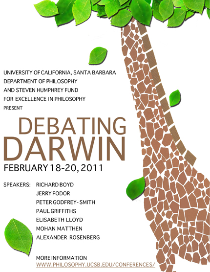

[Update: See Photo Gallery]
[Update: Videos Available online via UCTV]
[Update: Additional YouTube videos available with post-presentation debate: Godfrey-Smith vs. Fodor, Fodor vs. Audience members, and Tooby vs. Fodor]
UC Santa Barbara Department of Philosophy Announces
a Steven Humphrey Fund for Excellence in Philosophy Conference
Debating Darwin: Philosophical Issues in Evolution and Natural Selection
February 18-20, 2011
Friday, February 18
5:00 - 7:00 PM Peter Godfrey-Smith (Harvard), "Origin Explanations"
7:00 - 9:00 PM Reception/Buffet, UCSB Faculty Club
Saturday, February 19
9:30 - 11:30 AM Elisabeth Lloyd (Indiana), "Adaptationism in Action"
11:30 - 1:00 PM Lunch, Graduate Student Association Lounge
1:00 - 3:00 PM Paul Griffiths (Sydney), "How Evolution Tracks Truth"
3:00 - 3:15 PM Break
3:15 - 5:15 PM Jerry Fodor (Rutgers), "From the Darwin Wars"
Sunday, February 20
9:30 - 11:30 AM Mohan Matthen (Toronto), "Species as Historical Kinds"
11:30 - 1:00 PM Lunch, UCSB Faculty Club
1:00 - 3:00 PM Richard Boyd (Cornell), "Evolutionary Theory as Methodological Anesthesia: Methodological and Philosophical Lessons from Evolutionary Psychology"
3:00 - 3:15 PM Break
3:15 - 5:15 PM Alex Rosenberg (Duke), "How Jerry Fodor Slid Down the Slippery Slope to Anti-Darwinism, and How We Can Avoid the Same Fate"
Location: All talks will be in Theater & Dance 1701
Discussants
Contact: ucsb.conf@gmail.com.
Registration: For those wishing to attend the conference, registration is appreciated. It's free, and it helps our planning. To register send an email to the conference email address (ucsb.conf@gmail.com) with "Registration" in the subject line. If you give us your name and institutional affiliation, we will try to have a name tag waiting for you.
Travel: Local lodging.
Maps: UCSB Campus Map (see also map with Dept. & Conference Locations).
View Debating Darwin Conference 2011 in a larger map
Parking: Visitors to UCSB are required to have a valid parking permit. See Parking Services.
Links
|
{kind=link}
{kind=link}